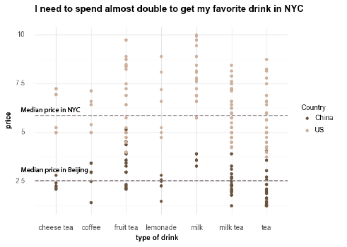
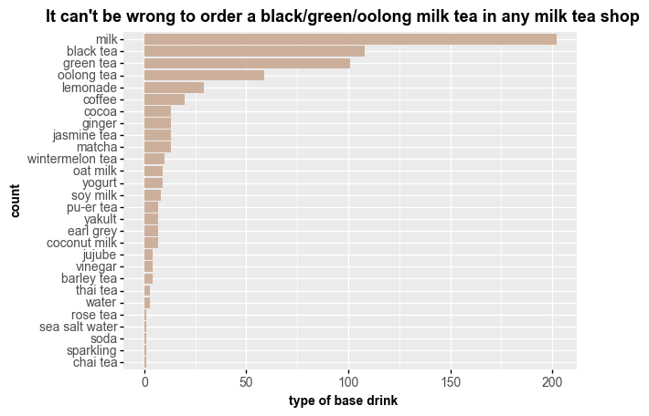
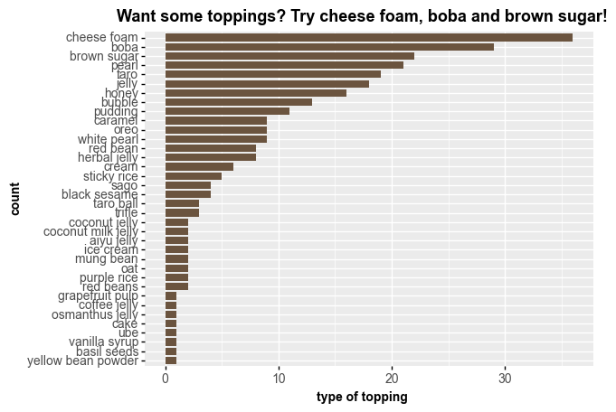
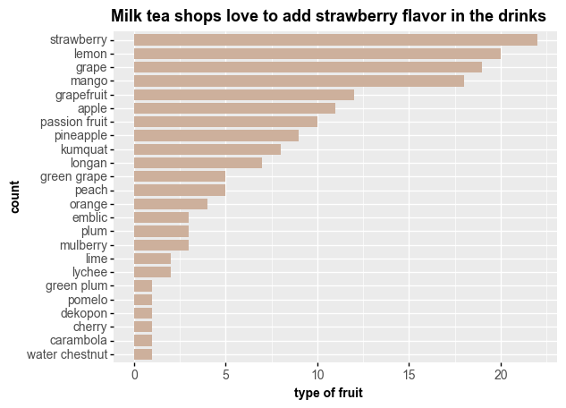

Milk tea is my reckoning.
It contains all the things that are sinful but make me happy: caffeine, sugar, fat… Every time when I felt stressed out for my undergraduate assignment, I would walk five minutes, from the library seat to Starlight Supermarket, where I could find my favorite milk tea shop, Happy Aunt. It was not a big chain store, just a small shop with three or four staff. I went here so frequently when I was applying for graduate school, that a short young woman working here could recognize me.
She enjoyed showing me her new ‘inventions’ on the seasonal menu. The most impressive new drink was a green milk tea with sticky rice wine, and Aiyu jelly. Holding such a drink in winter, I would feel energetic again to write my endless paper. I never tasted anything like that after my graduation, not in any other large chain milk tea shop.
Apart from this small tea shop on campus, I also like A Little, Hey Tea and Happy Lemon. Those tea shops were deeply connected with certain memories. A Little is famous for its really cheap price, around $2, and its unstable sugar level, which is highly dependent on the staffs’ mood and their own concepts of ‘a spoon of sugar’. The nearest A Little is located near the south gate of my university. I need to walk across a pedestrian bridge over the highway to get here. So I really enjoy walking here after dinner, to watch the sunset and the endless stream of cars, while holding a sweet, warm drink.
Hey Tea was a luxurious milk tea brand for me when I was in college. It’s alway located in fancy shopping malls and the waiting time can reach one or two hours during its busy time. So I often order it online ahead of time when going shopping with my friends. When we are about to tired shopping, it can be a perfect time to pick up the tea.
And Happy Lemon is located near a movie theater that I visited most. As a movie fan who will show up at the cinema at least twice a month, I always bought a pineapple lemonade with white pearl and enjoyed it with movies.
I didn’t realize how much I rely on them, until I arrived in New York.
Back in Beijing, I can easily order them online and get the delivery very fast under a quite reasonable price. ￥25, less than $4, can get me a very fancy drink with multiple toppings, even in Hey Tea, one of the most expensive milk tea ships in China. But here, I can only buy a basic type of milk tea at the cost of $7 or even $8 in some tea shops.
In this project, I want to use data to support my observation during my first six months in the U.S, that the milk tea in New York City is much, much, more expensive than it in Beijing.



